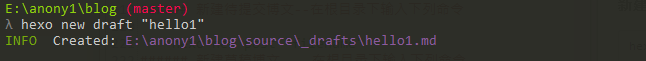

本教程适用于
Windows平台
参考博客
准备环境
必备环境
博客框架：hexo
Hexo is a fast, simple & powerful blog framework.
Hexo是一个极速、简单且强大的静态博客架构。它使用 Node.js 作为构建引擎，上百个文件在几秒钟内便可构建完成；而且拥有着丰富的插件库，因开源而显得生机勃勃，可扩展性很好；最重要的，它支持Markdown 作为书写语言，极大地方便了博客的撰写
详细的hexo的介绍与使用详见：自建静态博客之Hexo详解
版本控制工具：git
详细的Git的介绍与使用详见：版本控制(VCS)之Git详解
博客托管平台：github
详细的Github的介绍与使用详见：代码托管之Github详解
可选环境
文本编辑器
- sublime
- vim
- atom
- notepad++
详细的sublime的介绍与使用详见：文本编辑器之Sublime详解
详细的vim的介绍与使用详见：文本编辑器之Vim详解
命令行工具(控制台)
- cmder(win下)
- git(全平台)
bash(linux下)
总结：win平台上建议使用cmder;类Unix平台上建议使用git或者bash
详细的cmder的介绍与使用详见：Cmder详解
环境搭建
本地仓库(blog)的搭建
git的下载与配置
下载
官网下载:git download–>国内直接从官网下载比较困难，有时需要翻墙
国内下载：git for win
安装与使用
配置–创建本地仓库
新建仓库
在本地新建一个文件夹作为放置博客文件的仓库（名字和地方可以自由选择，当然最好不要放在中文路径下）。如：
E:\anony
初始化仓库
进入E:\anony，点击鼠标右键，选择Git Bash here
在命令提示符$后面输入命令：git init;初始化仓库
这时Git就把仓库建好了，而且告诉你是一个空的仓库（
empty Git repository），可以发现当前目录下（即新建的本地仓库E:\anony）多了一个.git的文件夹，这个目录是Git来跟踪管理版本库的，没事千万不要手动修改这个目录里面的文件，否则就把Git仓库给破坏了。如果你没有看到.git文件夹，那是因为这个目录默认是隐藏的，用ls -ah命令就可以看见隐藏的.git文件夹
hexo的安装与配置
详细的hexo教程请详见：Hexo官方教程文档或自建静态博客之Hexo详解
下载并安装node.js
node.js是Hexo 的构建引擎，所以安装hexo之前需要安装node.js
官网下载：node.js
在win上直接按照步骤安装（一直默认即可）。安装后可以使用命令：
node -v进行查看是否安装成功
下载安装hexo
由于官方并没有提供下载安装包，所有需要通过控制台(命令行工具)键入hexo命令进行下载安装
1. 使用git下载安装
在E:\anony目录下鼠标右键，选择Git Bash here
输入命令：npm install -g hexo-cli
查看hexo版本：hexo --version。验证是否安装成功
查看hexo命令的帮助文档：hexo
2.使用cmder下载安装
在E:\anony目录下鼠标右键，选择Cmder Here
输入命令：npm install -g hexo-cli
查看hexo版本：hexo --version。验证是否安装成功
查看hexo命令的帮助文档：hexo
配置Hexo
注意：
>>在之后提到的根目录就是hexo init命令后面指定的目录（此处是blog目录）
>>在下面的演示过程中使用cmder控制台（git效率较低）
1.使用hexo init命令初始化生成博客框架
在E:\anony目录下鼠标右键，选择Cmder Here
输入命令：
hexo init blog。初始化完成后会提示：INFO Start blogging with Hexo!。此时可以在根目录(E:\anony)下生成了一个blog文件夹，它是用来存放建立博客网站所需要的所有文件
2.cd到根目录(blog目录)下，在输入命令：npm install—安装依赖包
3.此时在anony目录下生成了一个blog目录，其内容如下
blog/
|- node_modules/ # hexo需要的模块，不需要上传GitHub
|- themes/ # 主题文件，需要上传GitHub的dev分支
|- sources/ # 博文md文件，需要上传GitHub的dev分支
|- public/ # 生成的静态页面，由hexo deploy自动上传到gh-page分支
|- package.json # 记录hexo需要的包信息，不需要上传GitHub
|- _config.yml # 全局配置文件，需要上传GitHub的dev分支
|- .gitignore # hexo生成默认的.gitignore，它已经配置好了不需要上传的hexo文件
访问本地仓库
由于git的执行效率较低，所以下面使用cmder控制台进行演示
生成博客站点文件
在根目录目录下鼠标右键，选择
Cmder Here(或者直接使用cd命令进行切换)，输入命令：hexo generate/hexo g.该命令会将source目录下的md文档根据配置文件生成博客网站内容
启动本地服务器
根目录下输入命令：hexo server/hexo s
访问本地仓库(博客)
用浏览器访问
http://localhost:4000/，此时，可以看到一个漂亮的博客首页，当然这个博客只是在本地的，别人是看不到的，hexo3.0使用的默认主题是landscape。（这是hexo的本地预览功能）
上传本地仓库(blog)到github
通过
hexo server搭建在本地的一个临时服务器，只有自己通过http://localhost:4000才能访问到，如果想要把自己的博客发布的互联网上，需要利用一个服务器来部署你的博客。
github账号的注册与配置
详细的github教程请见：github教程
注册github账号
登录github官网（有时需要翻墙）
如果你已经有账号，那么点击右上角的sign in直接登录。
如果没有账号，依次输入昵称、邮箱、密码，然后点击Sign up for GitHub进行注册，按照默认的设置完成注册，最后还要进行邮件确认,我们登录到自己的注册邮箱中，会有一个github发来的邮件，点击即可。
建立远程仓库(repository)
登录第一步注册的github账号，点击
Start a project，在Repository name下输入仓库名，记住仓库名必须是：username.github.io（username与注册的github账号名必须一致），其他的保持默认即可，然后点击Create repository，到这里，你在github上的的一个仓库就已经建立成功。
git的配置
配置git名称和邮箱(与github的用户名和邮箱是一致的)
hexo的配置
编辑
_config.yml文件： 编辑E：\anony\blog下的_config.yml文件（建议使用Notepad++或者sublime）。在_config.yml文件的最下方，添加如下配置：

注意：
username替换为你github的账号名称;hexo的配置文件中任何:后面都是带一个空格的，否则会报错

配置ssh key
此处可以参考Github官方文档配置ssh key
1.在根目录下鼠标右键，选择Cmder Here(或者直接使用cd命令进行切换)，输入以下命令
ssh-keygen -t rsa -C "Github的注册邮箱地址"
2.之后会要求确认路径和输入密码，我们这里使用默认的设置，一路回车就行，如果命令执行成功，会在C:\Users\Administrator目录下生成一个.ssh的文件夹（在打印信息中有提示）
3.进入.ssh文件夹，使用文本编辑器(sublime/notepad++)打开id_rsa.pub文件，复制全部内容（即生成的key）。
注意：千万不要使用Windows自带的记事本编辑任何文本文件。原因是Microsoft开发记事本的团队使用了一个非常弱智的行为来保存
UTF-8编码的文件，他们自作聪明地在每个文件开头添加了0xefbbbf（十六进制）的字符，你会遇到很多不可思议的问题，比如，网页第一行可能会显示一个“?”，明明正确的程序一编译就报语法错误，等等，都是由记事本的弱智行为带来的。建议你下载Notepad++或者sublime代替记事本，不但功能强大，而且免费！Notepad++使用时需要将默认编码设置为UTF-8 without BOM
4.登录github账号，然后在页面右下角的Your repositories目录下，打开创建的仓库（username.github.io） ，点击右上角的settings，左边选中SSH and GPG keys，右边选择New SSH key，Title可随便填写，Key：粘贴上面复制的key（即id_rsa.pub文件的全部内容），然后点击Add SSH key。
5.之后会收到一封github官网发来的验证邮件，打开邮件链接进行确认即可。
6.为了验证是否成功，输入以下命令
ssh -T git@github.com
如果是第一次，会提示是否
continue，输入yes就会看到：You’ve successfully username, but GitHub does not provide shell access（username会显示为你的账号名称）这就表示已成功连上github
上传本地仓库
1.安装hexo-deployer-git 插件
根据官方的文档显示，现在 Hexo 支持
Git、Heroku、Rsync、OpenShift、FTPSync等部署方式，我们选择Git来部署的话，需要首先安装hexo-deployer-git插件
在根目录下输入命令：npm install hexo-deployer-git --save
2.在根目录下依次输入下列命令
hexo generate(g)
hexo deploy(d)
以上命令可以简写成：hexo g -d

3.如果上传成功，会显示INFO Deploy done: git，到此，就大功告成了，在浏览器中输入username.github.io（username替换为github的仓库名），就可以看到自己的博客了
基本操作
撰写博文
本地创建
生成博文源文件
hexo new
新建待提交博文–在根目录下输入下列命令
hexo new post "filename"

新建草稿博文—-在根目录下输入下列命令
hexo new draft "filename"

编辑博文源文件
使用
markdownpad打开博文源文件
这是
post模板自动帮我生成的yaml文件头。其中title是博文的标题，我们可以改成「你好！」；tags是博文的标签，我们可以加上「demo」、「hello」两个标签，从第 7 行开始我们就可以撰写博客的正文了。假设我写好的博客如下：
编辑配置文件
编辑
_config.yml文件： 编辑E：\anony\blog下的_config.yml文件（建议使用Notepad++或者sublime）
本地预览
1.在根目录下一次输入下列命令
hexo g
hexo s2.然后用浏览器访问http://localhost:4000/

上传部署
在根目录下键入下列命令
hexo g -d
如果上传成功，会显示
INFO Deploy done: git，到此，就大功告成了，在浏览器中输入username.github.io（username替换为github的仓库名），就可以看到自己的博客了**
个性化配置
前面我们已经了解了Hexo 的安装使用和如何部署自己的博客到 Github，现在我们来自定义一下我们博客。配置文件有两个：
根目录的_config.yml(站点配置文件)：配置网站整体信息
themes目录下各主题中的_config.yml(主题配置文件)：配置网站主题信息
站点配置文件
使用sublime打开_config.yml
Site
这一组配置是博客的描述，
title和subtitle分别是博客的站名和副标题，description对搜索引擎收录博客会有帮助。language一般可以选配en或者zh-cn分别是英文和简体中文。
URL
这个部分需要修改的只有
url选项，如果想绑定自己购买的域名则将url改成自己的域名，否则就不需要改动此部分
Extensions
这一组配置是用来定义主题和配置插件的，可以看到，官方默认的主题叫做
landscape，就是天际地平线的主题。Hexo主题社区和Hexo插件社区非常非常的活跃，官方列表已经收录了 84 个制作精美的主题（字母升序排列，热度不分先后），每个主题都有很大的差别和不一样的特性，大家可以自行去列表中浏览、预览、选择自己喜欢的主题，总有一款适合你的胃口（没有就自己改😄）。例如，我现在选择yelee主题
主题配置文件
每一个主题的详细配置参数都在
/themes/themename/_config.yml文件下，可以查阅该主题的官方页了解配置的解释;也可以根据_config.yml文件中的注释信息进行相关配置。这里我们选择
yelee主题做演示想深度定制自己的
yelee主题详见：Hexo主题之yelee
下载yelee主题
1.官网搜索主题
2.鼠标放在yelee上，右键，点击复制链接
3.翻墙下载或者
git clone下载,在根目录下打开git bash或者cmder，输入一下命令
$git clone https://github.com/MOxFIVE/hexo-theme-yelee.git themes/yelee(使用https协议clone，有时被墙无法连接)
$git clone git@github.com:MOxFIVE/hexo-theme-yelee.git themes/yelee(使用ssh协议clone，建议使用该方法，不担心由于被墙而无法连接)
安装yelee主题
将下载好的主题文件夹放到themes/下相应目录中
修改配置文件
将配置文件_config.yml中的theme选项值改为：yelee
主题更新
$cd themes/yelee
$git pull
预览主题
保存后，我们再次执行
hexo server命令，预览一下网站的变化
此时主题已经发生了巨大的改变，网站左侧现在显示的是
author和sutitle了，右边的预览页面支持很多动态特效。每一个主题的详细配置参数都在/themes/yelee/_config.yml文件下，可以查阅该主题的官方页了解配置的解释。当你选定了自己喜欢的主题，修改、配置好了之后。便可以使用、撰写、发布自己的博客了。